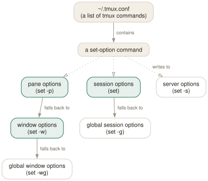

Day 05
Options and your first config
Four scopes, one inheritance chain, and a tmux.conf you can defend.
By the end of today you can
- say exactly which of the four option scopes a setting belongs to, and why
- change an option for one pane, one window, one session, or everything
- keep a ~/.tmux.conf that you understand line by line, and reload it with one key
A config file is just a list of commands
There is no configuration language. ~/.tmux.conf is a file of the same commands you have been typing at C-b: all week, executed top to bottom when the server starts. Every line in it could equally be typed at a prompt, and every command you type at a prompt could equally be a line in it.
tmux looks for /etc/tmux.conf first, then your own file at ~/.tmux.conf or $XDG_CONFIG_HOME/tmux/tmux.conf or ~/.config/tmux/tmux.conf. A different file can be forced with tmux -f other.conf, which is the safe way to try someone else's configuration without touching yours.
Four scopes
Every option belongs to one or more of four scopes, and this is the single thing that makes the options section of the man page navigable.
- server
-s - One set for the whole server. Terminal handling, timings, clipboard behaviour: things that are not about any particular session.
- session
-gor per-session - Status line, prefix key, mouse, history limit. Sessions that do not set one of these inherit the global value.
- window
-w - Layout sizes, monitoring, copy mode keys, automatic renaming.
- pane
-p - Styles, cursor,
synchronize-panes,remain-on-exit. Pane options fall back to the window's value.

-p and -w write to the left column, -g writes to the bottom of a column instead of the top, -s writes to the server, and -u deletes a value so the next arrow takes over.The practical consequence of that last arrow: any pane option can be set at window scope to cover every pane in the window. The man page's own example is worth stealing —
$ tmux set -w window-style bg=red # every pane in this window
$ tmux set -pt :.0 window-style bg=blue # except pane 0
show-options -A is the debugging tool: it lists inherited values too, marking them with an asterisk, so you can see at a glance whether a value is really set here or is coming from further down the chain.
Reading the options you have
$ tmux show -g | head # global session options
$ tmux show -gw # global window options
$ tmux show -s # server options
$ tmux show -gv history-limit # just the value
$ tmux show -wA # this window, inherited values marked with *
User options
Any option whose name starts with @ is yours. tmux stores it and otherwise ignores it, at any scope:
$ tmux set -g @project api
$ tmux show -gv @project
api
These are how plugins keep their settings, and how you attach a little metadata to a session or window and then use it in a status line format on Day 9 — for example colouring a window by an @env tag you set when you created it.
Today's file, defended line by line
Below is the beginning of the configuration this course builds. Nothing here is cosmetic and nothing here is copied from a dotfiles repository — every block gets a comment saying why it exists, because in eight months that comment is the only thing standing between you and a config you are afraid to touch.
One deliberate omission: the prefix key is still C-b. Plenty of people remap it to C-a (which then collides with readline's beginning-of-line) or C-Space. Both are reasonable; neither is urgent. If you want to, the incantation is in the man page's own examples:
# only if you really want it — and then live with it everywhere
set -g prefix C-a
unbind C-b
bind C-a send-prefix
New vocabulary
Keys
| Key | Does |
|---|---|
| C-bC | Customize mode: browse and change every option and key, with descriptions. |
| C-bR | Reload ~/.tmux.conf — after you add today's binding. |
Commands
| Command | Does |
|---|---|
set-option -g name value | Set a global session option. Alias set. |
set-option -w name value | Set a window option (for the current window). |
set-option -p name value | Set a pane option (for the current pane). |
set-option -s name value | Set a server option. |
set-option -u name | Unset, so the value is inherited again. |
set-option -a name value | Append to a string or style option instead of replacing it. |
show-options -g | Show global session options. Alias show. |
show-options -A | Show them including inherited values, marked with *. |
show-options -gv history-limit | Print just the value of one option. |
source-file ~/.tmux.conf | Run a file of tmux commands now. Alias source. |
customize-mode | The interactive option browser behind C-bC. |
Options
| Option | Does |
|---|---|
base-index | Index the first window gets. Default 0. |
pane-base-index | Index the first pane gets. Default 0. A window option. |
renumber-windows | Close the gaps in window indices when one is killed. |
escape-time | Milliseconds tmux waits to decide whether Escape began a key sequence. |
focus-events | Pass terminal focus in/out through to the programs in panes. |
display-time | How long status line messages stay up. 750 ms by default. |
default-terminal | The $TERM new panes get. Must be a screen/tmux derivative. |
Today's configappend to ~/.tmux.conf
Reload the config without restarting the server. Bind it first, because you will use it constantly while building the rest of this file.
bind -N "Reload ~/.tmux.conf" R \
source-file ~/.tmux.conf \; display-message "tmux.conf reloaded"
Count windows and panes from 1. The keyboard's number row starts at 1, and reaching past 0 for the first window is a small tax paid several hundred times a day.
set -g base-index 1
set -wg pane-base-index 1
set -g renumber-windows on
2000 lines of scrollback is a 1990s default. This costs a few MB per pane at worst.
set -g history-limit 50000
Copy mode keys. Choose the one your fingers already know; the default depends on $EDITOR, which means it silently differs between machines.
set -wg mode-keys vi
Mouse: click to select a pane or window, drag borders to resize, wheel to scroll into copy mode. Shift-drag still gives you the terminal's own selection when you want it.
set -g mouse on
How long tmux waits after Escape to see if it was really Alt-something. Older tmux defaulted to 500 ms, which made vim feel broken; 3.x already uses 10, so this line is insurance against sitting down at an older machine.
set -s escape-time 10
Let programs in panes see focus gained/lost, so things like vim's autoread work.
set -s focus-events on
Status line messages vanish after 750 ms by default, which is not long enough to read an error you did not expect.
set -g display-time 2000
Reload with tmux source-file ~/.tmux.conf and watch for errors in the status line.
Drillsdo these in a real terminal, today
Self-check
Answer out loud first, then unfold.
You edit ~/.tmux.conf and nothing changes. Why?
The file is read exactly once, when the server starts. Detaching and re-attaching does not restart the server; only killing every session does. Reload deliberately with source-file — which is why the first thing today's config adds is a key bound to it.
You re-source your config after deleting a bind line, but the key still works. Why?
Because sourcing a file runs the commands in it; it does not diff the file against the server's state. Removing a line removes nothing that already happened. To take a binding away you must actively unbind-key it, or restart the server. The same applies to options: deleting a set line leaves the value it set in place.
What is the difference between set -g mode-keys vi and set -wg mode-keys vi?
Nothing, in practice. mode-keys is a window option, and when the name is unambiguous tmux infers the scope for you, so the -w is redundant. Being explicit still pays: it documents which scope you meant, and it is required for user options (@name), where tmux cannot guess.
Which scope for: status-style, escape-time, synchronize-panes, automatic-rename?
status-style is a session option — the status line belongs to the session you are looking at. escape-time is a server option; it is about how tmux reads the terminal, which is global. synchronize-panes is a pane option (usually set at window scope so it applies to all of them). automatic-rename is a window option, because names belong to windows.
Cheat sheet
set -s name value # server scope (escape-time, focus-events, terminal-*)
set -g name value # global session (prefix, mouse, status-*, history-limit)
set -wg name value # global window (mode-keys, monitor-*, automatic-rename)
set -p name value # this pane only (styles, synchronize-panes, remain-on-exit)
set -u name # unset -> inherit again; set -a appends to a string
show -g / -gw / -s # what is set show -A marks inherited values with *
C-b C # customize mode: browse everything, with descriptions
C-b R # your reload binding (source-file ~/.tmux.conf)
Chain: pane → window → global window. Session → global session. Server stands alone.
Everything through Day 05
Keys
| Key | Does |
|---|---|
| C-bd | Detach this client. The session keeps running. |
| C-b$ | Rename the current session. |
| C-b? | List every key binding. q to leave. |
| C-b: | Open the tmux command prompt. |
| C-bt | Show a clock — a harmless way to prove the prefix works. |
| C-bC-b | Send a literal C-b to the program in the pane. |
| C-bc | Create a window at the lowest free index. |
| C-b, | Rename the current window — and pin the name. |
| C-bn | Next window by index. |
| C-bp | Previous window by index. |
| C-bl | Back to the last window you were in. The one to actually learn. |
| C-b0 | Jump straight to window 0 (likewise 1 … 9). |
| C-b' | Prompt for a window index — for windows above 9. |
| C-bw | Choose a window from an interactive tree with previews. |
| C-b& | Kill the current window, after a confirmation. |
| C-b. | Move the current window to a different index. |
| C-bi | Flash some information about the current window. |
| C-b% | Split left/right. The |-shaped key gives you a |-shaped border. |
| C-b" | Split top/bottom. |
| C-bLeft | Move to the pane to the left (likewise Right, Up, Down). |
| C-bo | Next pane in creation order. |
| C-b; | The previously active pane — the C-bl of panes. |
| C-bq | Flash the pane numbers; press a digit while they show to jump there. |
| C-bz | Zoom: this pane fills the window. Press again to restore. |
| C-bx | Kill this pane, after a confirmation. |
| C-bSpace | Cycle to the next preset layout. |
| C-bM-1 | even-horizontal — side by side in a row. |
| C-bM-2 | even-vertical — stacked in a column. |
| C-bM-3 | main-horizontal — one big pane on top. |
| C-bM-4 | main-vertical — one big pane on the left. |
| C-bM-5 | tiled — a grid. |
| C-bE | Spread the current pane and its neighbours out evenly. |
| C-bC-Left | Resize by one cell (hold to repeat). M-Left does five. |
| C-b{ | Swap this pane with the previous one; C-b} with the next. |
| C-bC-o | Rotate every pane through the layout; C-bM-o rotates back. |
| C-b* | Open a floating pane over the window — hovers above the layout. |
| C-b[ | Enter copy mode at the bottom of the history. |
| C-bPageUp | Enter copy mode already scrolled one page up. |
| C-b] | Paste the most recent buffer into this pane. |
| C-b= | Choose which buffer to paste, from a list with previews. |
| C-b# | List the paste buffers. |
| C-b- | Delete the most recent buffer. |
| q | In copy mode: leave. (Escape in emacs mode.) |
| /? | vi mode: search forward / backward; n and N repeat. |
| C-sC-r | emacs mode: incremental search forward / backward. |
| Space | vi mode: start a selection. C-Space in emacs mode. |
| v | vi mode: toggle rectangle (block) selection. R in emacs mode. |
| Enter | vi mode: copy the selection and leave. M-w in emacs mode. |
| gG | vi mode: top / bottom of the history. |
| C-bC | Customize mode: browse and change every option and key, with descriptions. |
| C-bR | Reload ~/.tmux.conf — after you add today's binding. |
Commands
| Command | Does |
|---|---|
tmux | Start the server if needed and create a session, attached. |
tmux new -s work | Create a session named work. |
tmux new -A -s work | Attach to work, creating it only if absent. |
tmux ls | List sessions on this server. Alias for list-sessions. |
tmux attach -t work | Attach this terminal to work. |
tmux attach -d -t work | Attach, detaching any other client first. |
tmux detach | Detach the current client, from inside or by target. |
tmux rename-session api | Rename the current session. |
tmux kill-session -t work | Destroy a session and everything in it. |
tmux kill-server | Destroy every session. The nuclear option. |
new-window | Create a window. Alias neww. |
new-window -n logs | Create it with a fixed name. |
new-window -c ~/src/api | Create it with that working directory. |
new-window -d | Create it but do not switch to it. |
new-window -a -t 2 | Insert after window 2, shifting the rest along. |
rename-window api | Rename the current window. |
select-window -t :3 | Switch to window 3 of the current session. |
last-window | Switch to the previously current window. |
kill-window -t :logs | Kill a window by name. |
list-windows | List windows in the session. Alias lsw. |
choose-tree -w | The interactive picker behind C-bw. |
split-window -h | Split left/right. Alias splitw. |
split-window -v | Split top/bottom. The default if neither is given. |
split-window -c ~/src | Start the new pane in that directory. |
split-window -l 30% | Give the new pane 30% of the space (-l 20 for cells). |
split-window -b | Put the new pane before — above or to the left of — the old one. |
split-window -f -h | Split the full window height, not just the current pane. |
select-pane -L | Move to the pane on the left (-R -U -D likewise). |
select-pane -t 2 | Move to pane 2 of this window. |
last-pane | Back to the previously active pane. |
resize-pane -Z | Toggle zoom. |
resize-pane -x 100 -y 30 | Resize to an absolute size, cells or %. |
select-layout tiled | Apply a named layout. |
select-layout -E | Spread evenly (what C-bE runs). |
select-layout -o | Undo the most recent layout change. |
list-panes | List panes with index, size and command. Alias lsp. |
kill-pane -a | Kill every pane except this one. |
swap-pane -D | Swap with the next pane, keeping focus behaviour sane. |
copy-mode | Enter copy mode; -u starts a page up, -e exits at the bottom. |
send-keys -X begin-selection | How every copy-mode key is implemented. -X means “to the mode”. |
list-buffers | Show the buffer stack. Alias lsb. |
set-buffer "text" | Put a literal string into a buffer from a script. |
load-buffer file | Read a file into a buffer (- for stdin). |
save-buffer file | Write a buffer out to a file (- for stdout). |
show-buffer | Print the newest buffer. |
paste-buffer -t :1.0 | Paste into a specific pane, not necessarily this one. |
delete-buffer -b name | Remove one buffer. |
capture-pane -p -S -3000 | Dump the last 3000 lines of history to stdout. |
clear-history | Throw away a pane's scrollback. Alias clearhist. |
set-option -g name value | Set a global session option. Alias set. |
set-option -w name value | Set a window option (for the current window). |
set-option -p name value | Set a pane option (for the current pane). |
set-option -s name value | Set a server option. |
set-option -u name | Unset, so the value is inherited again. |
set-option -a name value | Append to a string or style option instead of replacing it. |
show-options -g | Show global session options. Alias show. |
show-options -A | Show them including inherited values, marked with *. |
show-options -gv history-limit | Print just the value of one option. |
source-file ~/.tmux.conf | Run a file of tmux commands now. Alias source. |
customize-mode | The interactive option browser behind C-bC. |
Options
| Option | Does |
|---|---|
automatic-rename | Window renames itself after the running command. On by default. |
automatic-rename-format | The format used when it does. Defaults to the pane's command. |
allow-rename | Whether a program in the pane may rename the window by escape sequence. |
main-pane-width | Width of the big pane in the main-vertical layouts. Accepts %. |
main-pane-height | Height of the big pane in the main-horizontal layouts. |
tiled-layout-max-columns | Cap the columns in the tiled layout; 0 means no cap. |
mode-keys | vi or emacs key bindings inside copy mode. Default emacs. |
history-limit | Lines of scrollback kept per pane. Default 2000, which is stingy. |
copy-command | Shell command that bare copy-pipe pipes to — your clipboard tool. |
set-clipboard | Whether tmux sets the terminal's clipboard with OSC 52. |
word-separators | What counts as a word boundary for w and b. |
wrap-search | Whether searches wrap around the end of the history. On by default. |
base-index | Index the first window gets. Default 0. |
pane-base-index | Index the first pane gets. Default 0. A window option. |
renumber-windows | Close the gaps in window indices when one is killed. |
escape-time | Milliseconds tmux waits to decide whether Escape began a key sequence. |
focus-events | Pass terminal focus in/out through to the programs in panes. |
display-time | How long status line messages stay up. 750 ms by default. |
default-terminal | The $TERM new panes get. Must be a screen/tmux derivative. |